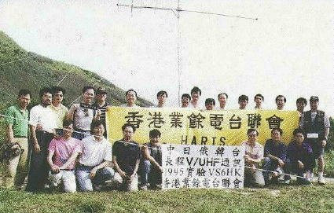
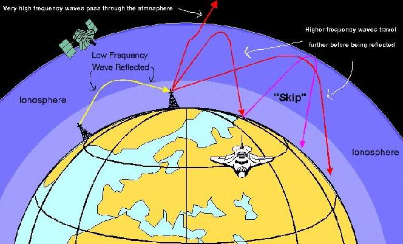
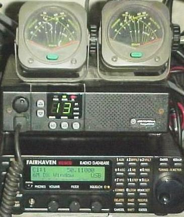
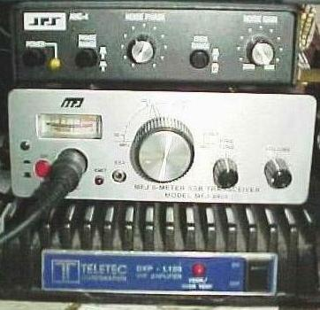
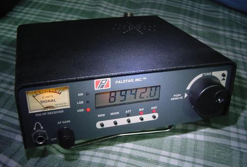
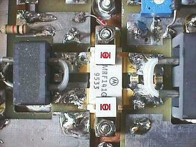
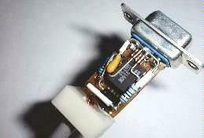
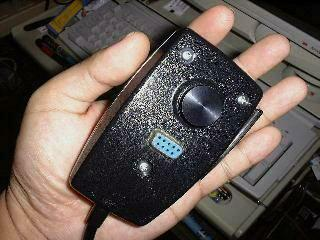

|
Amateur Radio in Hong
Kong
|
| 
|
Hong Kong Communications Authority |
|
What is Amateur Radio
(The
information may be
outdated and contain error, I welcome your
comment)
|
| Amateur
Radio is a hobby that make
use of
radio equipment to communicate with people all over the
world, this is
open to
the general public, and required by law the operator must
obtain a
license to
operate the radio, they usually have to pass some kind of
examination
to get the
license, and they are allowed to make, maintain and modify
their own
equipment
and this is where the fun starts. Beside leisure chatting
and make
friends over
the air, the nature of the hobby is to exchange ideas and
experience on
radio
communication. By experiment with different communication
modes and
equipment
setup, Amateur provide valuable information to the
manufacturer to
design better
quipment, this will in turn benefit the commercial user,
Amateur play
an
important role in the early days of radio communication
development. In
order to
promote the hobby there are contests held by worldwide
organizations
and radio
clubs, such as 'Fox Hunting' a game to locate hidden
transmitter is a
very hot
one. Sometimes Amateur also provide communication support
to the public
in
special events such as sports and games, and when
required, will
provide
emergency communication link in case of national disaster.
To prevent
interfere
with commercial and essential service there are restricted
frequency
and power
level to use, which is governed by the IARU, as
well as the local
telecommunication authority. For
instance Hong Kong belongs to region 3 in the band plan,
may not
communicate
with the USA in some frequency only available in region 2.
For those do
not have
a license to transmit, can become a shortwave
listener(SWL) and this is
also
interesting. After a successful 2-way communication,
operators will
exchange QSL
cards to confirm the contact, and by collecting such cards
they can
apply for
the awards. The hobby has now become very hot in the USA
and Japan, and
there
are over 1,000 licensed operator in Hong Kong. Please also see : The History of Telecommication |
| How Radio Signal Propagate |

| There
are layers of thin air at
the edge of the Earth,
that receive strong radiation from the sun, causing them
to ionize and
able to
reflect radio waves, such layers called the
'ionosphere'. There are 4
such
layers namely D, E, F1 and F2, each of them responsible
for reflecting
different
frequency range. The density of the ionosphere changes
according to the
'Sun
spot' activity, the higher the activity the stronger the
ionization
thus reflect
radio waves better. The Sun spot activity is in a
predictable 11 years
halfcycle
from peak to bottom, and then from bottom to peak the
next 11 years.
The height
of the ionosphere also changes in time, this explain why
distance
shortwave
station can not be heard all the time in one frequency,
because the
radio waves
'landed' on different region of the Earth after
being reflected. To maintain
reliable
service the broadcaster will change frequency in
different hours of the
day and
different season of the year, and transmit in more than
one frequency
so that
they can be heard all the time all over the world. The
ionosphere has
very
little effect on frequency above 50Mhz, at that
frequency the wave
length becomes
too short that can penetrate the ionosphere and go
straight to space,
so
satellite communication requires VHF or above.
Radio wave fall into three main categories with different usage : HF (High Frequency
3-30Mhz) VHF (Very High
Frequency 30-300 MHz) UHF (Ultra
High
Frequency 300-3000
MHz) |
| My Gears |
|  |  |
|  | |
| Homebrew |
|  |  |
| My homebrew power
amp. 10Mhz-150Mhz up to 300W at 28V Kits available at CCI |
My
mini SSTV
converter Built into a DB9 cover |
|  | How about a SSTV mic ! |
| What
is SSTV
anyway ?
Commercial Products A wonderful shortwave radio If you can't affort one American Radio Relay League Radio Society of Great Britain Japan Amateur Radio League History Of Radio |
|
|
 |
 |